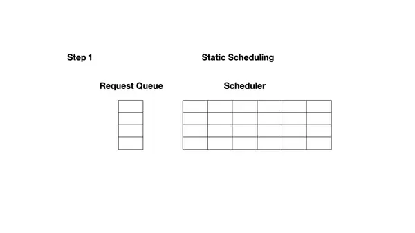
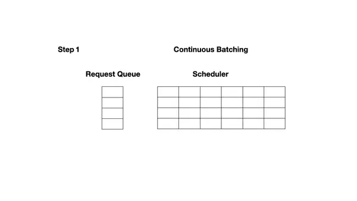

【纯转载】Chunked-Prefills 分块预填充机制详解
# 1 传统 prefill 和 decode 阶段中存在的问题
每个大语言模型（LLM）的推理请求都会经历两个阶段：首先是 prefill 阶段，模型会处理整个输入 prompt 并生成第一个输出 token；随后进入 decode 阶段，模型会一次生成一个 token，直到输出完整的结果。
prefill 阶段由于可以并行处理整个输入，往往延迟较高但能充分利用 GPU 计算资源；而 decode 阶段每次只处理一个 token，延迟较低但 GPU 利用率也随之降低。**因此，批处理（batching）在 decode 阶段尤为有效，有助于提升整体吞吐量。**但在实际服务中，多个请求的批量调度会导致 prefill 和 decode 阶段交错进行，这为同时实现高吞吐和低延迟带来了不小的挑战。
# 2 Batching 的演进过程
# 2.1 Static Batching
Static Batching 是一种传统的大模型推理调度策略，其核心特点是：一旦构建了一个 batch，其中的所有请求将统一执行，直到全部完成后才释放资源并加入新的请求。
Static Batching 虽然可以降低 TBT 延迟，但也会牺牲整体系统吞吐量，并导致 GPU 资源浪费。
下图展示了使用 Static Batching 完成 4 个推理请求的过程。在第一轮（图左），每个请求根据提示词（黄色）生成一个 token（蓝色）。经过多轮迭代后（图右），每个请求的生成长度不同，因为它们在不同轮次生成了结束标记（红色）。尽管请求 3 在第二轮就已完成，Static Batching 仍要求整个 batch 等待最慢的请求完成（此例中为第六轮的请求 2），这导致 GPU 在后续迭代中无法被充分利用。

下面这张动图可以更清晰地展示 Static Batching 的基本原理：

Static Batching 采用的是固定的调度流程：调度器（Scheduler）每次从请求队列中取出一组请求（例如图中的 x1 和 x2），组成一个新的 batch，并交由执行引擎（Execution Engine）统一进行推理。只有当执行引擎完成该 batch 中所有请求的推理后，调度器才会开始处理下一轮 batch。由于 batch 中的所有请求必须一起行动，我们管这种调度策略叫 request-level schedule。

图片来源：Orca: A Distributed Serving System for Transformer-Based Generative Models
以下是 Static Batching 的伪代码实现：

图片来源：Taming Throughput-Latency Tradeoff in LLM Inference with Sarathi-Serve
# 2.2 Continuous Batching
论文：
Orca: A Distributed Serving System for Transformer-Based Generative Models：https://www.usenix.org/conference/osdi22/presentation/yu
业界意识到传统方法存在效率低下的问题，并提出了更优的方案。Orca: A Distributed Serving System for Transformer-Based Generative Models 是 OSDI ’22 上发表的一篇论文，这是首个系统性解决该问题的工作。Orca 引入了 iteration-level scheduling，不再等待 batch 中所有序列生成完成，而是每轮迭代动态决定 batch 大小。这样一来，batch 中的某个序列一旦完成生成，就可以立即被替换为新的请求，从而相比 Static Batching 显著提升了 GPU 的利用率。
下图展示了使用 Continuous Batching 完成 7 个推理请求的过程。左图展示的是第一轮迭代后的 batch，右图展示的是多轮迭代后的情况。一旦某个请求生成了结束标记（EOS token），就将其替换为一个新的请求（例如 S5、S6 和 S7）。这种方式避免了等待所有请求完成后再处理新请求的情况，因此能显著提升 GPU 的利用率。

下面这张动图可以更清晰地展示 Continuous Batching 的基本原理：

# 2.2.1 Iteration-Level Scheduling
下展示了 ORCA 采用迭代级调度（iteration-level scheduling）时的系统架构与整体工作流程：
- ① 调度器首先决定下一步要运行哪些请求。
- ② 然后调用引擎对四个选中的请求（x₁, x₂, x₃, x₄）进行推理。对于首次被调度的请求，调度器会提供其输入 token 给引擎处理。本例中，x₃ 和 x₄ 尚未进行过任何迭代，因此调度器为 x₃ 提供了 (x₃₁, x₃₂)，为 x₄ 提供了 (x₄₁, x₄₂, x₄₃)。
- ③ 接着，引擎对这四个请求执行了一轮模型推理。
- ④ 并返回每个请求生成的一个输出 token（x₁₅, x₂₃, x₃₃, x₄₄）。
一旦某个请求完成推理，请求池会移除该请求，并通知终端返回响应。

图片来源：Orca: A Distributed Serving System for Transformer-Based Generative Models
# 2.2.2 在 Iteration-Level Scheduling 中实现 Batching 的挑战
在实践中应用 iteration-level scheduling 时，我们面临的一个主要挑战就是如何实现批处理。为了达到高效执行的目的，执行引擎应当能够对任意被选中的一组请求进行批处理执行。否则，就只能一个一个地处理请求，无法发挥 GPU 的大规模并行计算能力。
然而，即使只是两条请求，也无法保证它们在下一轮迭代中能够合并执行。这是因为要实现批处理，不仅需要多个请求处于相同的阶段，还必须具有形状完全一致的输入张量。
一对请求在以下 3 种情况下，下一次迭代不能一起批处理：
- 两个请求都处于 prefill 阶段，但输入 token 数量不同（例如 x₃ 和 x₄）。prefill 阶段的 Attention 是一次性并行处理整个 prompt 序列。如果两个请求的输入 token 长度不同，它们的输入张量在长度维度（L）上不一致，无法拼接成统一形状的 batch 张量
[B, L, H]，导致无法合批执行。请求 x₃ 的 prompt 长度是 2，输入张量形状为[1, 2, H]；请求 x₄ 的 prompt 长度是 3，输入张量形状为[1, 3, H]，无法拼接成一个[2, L, H]的张量，因此不能合批执行。 - 两个请求都处于 decode 阶段，但正在生成不同位置的 token（例如 x₁ 和 x₂）。 虽然 decode 阶段每次只处理一个 token，输入张量形状都是
[1, H]，但此阶段的 Attention 会依赖之前生成的所有 token（即使用 KV cache）。如果请求的生成位置不同，其 KV cache 长度也不同，导致 Attention 的 Key/Value 张量形状不同。 - 两个请求处于不同阶段：一个在 prefill，另一个在 decode（例如 x₁ 和 x₃）。 prefill 的一次迭代会并行处理所有输入 token，以提高效率，而 decode 阶段的一次迭代则只处理一个 token。
为了解决上述挑战，一个可行的思路是：尽可能寻找这些请求在计算过程中的共性，以便将相同的部分合并执行，从而最大化批处理效率；对于差异部分，则单独处理。
# 2.2.3 Selective Batching
Selective Batching 的核心原理在于：仅对适合批处理的操作执行批处理，不适合批处理的操作则单独处理。
具体来说：
- 对于
preproj、postproj、FFN1和FFN2这类线性变换或归一化操作，它们的计算与序列长度无关，只是在 hidden_size 维度上做线性转换，并且都需要从显存读取权重。因此，可以将 batch 内所有 token 拉平成一个二维张量，例如 x₃ 和 x₄ 的输入张量可以合并为一个形状为 [∑L,H]=[5,H] 的二维张量，一次性完成所有相关计算。这样不仅简化了操作，还能显著提升权重加载的利用率，降低 IO 次数，提高整体执行效率。 - 对于 Attention 操作，由于每个请求的 mask、KV cache 和 token 位置可能不同，导致其张量形状不一致，无法直接合并处理。Selective Batching 会在进入 Attention 之前将 batch 拆分，逐个请求单独计算 Attention 分数，完成后再将结果合并回统一的张量，以便继续执行后续操作。Attention 分数的计算并不依赖显存中的模型权重，只需使用之前生成的 Q、K、V 向量即可，因此拆分处理不会带来额外的 IO 开销。

图片来源：Orca: A Distributed Serving System for Transformer-Based Generative Models
# 2.2.3.1 为什么在 Batch 中混合 Prefill 和 Decode 请求可以提升性能？
在 Batch 中混合 Prefill 和 Decode 请求可以提升性能，原因在于这两种阶段对 GPU 资源的利用方式互补，混合后能更充分地发挥硬件潜力：
- prefill 阶段是计算密集型（compute-bound），主要时间花在大规模的线性变换和矩阵运算上，算力利用率高，但内存带宽利用率不高。即使 batch size 很小，prefill 吞吐量也很快趋于饱和，增大 batch size 对提升吞吐帮助有限（比如 batch size 从 4 增加到 8），甚至可能因算力饱和而下降。
- decode 阶段是内存密集型（memory-bound），大部分时间消耗在读取 KV cache 和模型权重上，算力利用率很低。此时增大 batch size 可以显著提升吞吐，因为可以合并多次权重和 KV cache 的读取，减少 IO 次数，让空闲的算力得到利用。
混合批处理的优势在于：
- prefill 阶段可以搭载（piggyback）在 decode 阶段未被充分利用的算力上，提升整体算力利用率。
- decode 阶段可以和 prefill 阶段共享一次权重读取，减少内存带宽压力，提高带宽利用率。
- 这样，GPU 的计算单元和内存带宽都能被更充分利用，整体吞吐和 QPS 明显提升。
下展示了吞吐量随 batch size 变化的趋势。可以观察到：对于 decode 阶段，吞吐量几乎呈线性随 batch size 增长；而 prefill 阶段即便只处理一个请求，其吞吐量也已接近饱和，进一步增大 batch size 效果有限。

图片来源：Taming Throughput-Latency Tradeoff in LLM Inference with Sarathi-Serve
prefill 和 decode 阶段在吞吐量扩展性上的差异，源于它们所执行的矩阵乘法形式不同：**prefill 阶段执行的是（批量的）矩阵-矩阵乘法（matrix-matrix multiplications），而 decode 阶段执行的是向量-矩阵乘法（vector-matrix multiplications）。**众所周知，当算术强度高于 GPU 的 FLOPS:内存带宽（FLOPS，floating-point operations per second，表示模型在推理过程中执行的浮点运算次数）比值时，内核属于 compute-bound 类型，能够高效地在 GPU 上运行。相反，算术强度较低的内核则由于受限于内存带宽，难以充分发挥 GPU 的计算能力，属于 memory-bound 类型。
下图展示了 prefill 和 decode 阶段中各个操作的算术强度（arithmetic intensity）。如下图所示，在 prefill 阶段，即使 batch size 为 1，所有操作的算术强度依然很高。而在 decode 阶段，这些操作的算术强度下降了两个数量级以上，只有在 batch size 达到 256 这种极大值时，decode 阶段才开始变得计算密集。

然而，将 batch size 扩展到如此之高在实际中几乎无法实现，因为每条请求的 KV cache 占用非常大。 例如，在 LLaMA-13B 模型上，使用 A6000 GPU，在序列长度为 1K 的情况下，最多只能容纳 18 条请求的 batch。因此，在当前可行的 batch size 范围内，decode 阶段仍然是内存瓶颈（memory-bound）。
图片来源：Taming Throughput-Latency Tradeoff in LLM Inference with Sarathi-Serve
# 2.2.3.2 Selective Batching 还存在什么问题？
回顾 ORCA 的 Selective Batching 的策略就会发现，其行为具有一定的随机性：一个 batch 中包含多少条 prefill 请求、多少条 decode 请求，并没有明确控制，仅仅是按照“先到先服务”的策略动态拼装而成。这就带来一些问题：
- 若某个 batch 中包含大量 prefill 请求，或某些 prefill 请求本身 token 很长，就会导致 prefill tokens 占据大量计算资源，使整个 batch 变得 compute-bound；
- 相反，若 batch 中以 decode 请求为主，例如所有请求都处于推理阶段，或没有新的输入序列可调度，则该 batch 很可能是 memory-bound 的，导致算力无法充分利用。
- 在流水线并行中同样可能产生气泡。
虽然流水线并行（Pipeline Parallelism）可以扩展大模型的并行能力，但也引入了一个典型问题：流水线气泡（pipeline bubbles）。所谓“气泡”，是指由于不同阶段间计算不均衡或等待导致的 GPU 空闲时间，从而造成资源浪费和吞吐下降。
Orca 系统尝试通过 迭代级调度（iteration-level scheduling） 来缓解这一问题，但在实际推理中仍然可能出现气泡，主要原因包括：
- PB1：连续 micro-batch 的 prefill token 数量差异大。例如，若 AB 和 CD 分别是两个 micro-batch，且 AB 的 token 总数显著多于 CD。当 GPU1 完成 Cp 和 Dp 的 prefill 后，必须等待 GPU2 完成 AB 的 prefill，才能继续执行 Ad1 和 Bd1 的 decode。GPU1 在此期间处于空转状态，形成 PB1 类型气泡。
- PB2：prefill 阶段和 decode 阶段计算负载差异大。PB2 类型气泡出现在 prefill 和 decode 阶段相继执行时。以 Ad1 和 Bd1 为例，它们的 decode 阶段每次仅处理一个 token，计算时间极短；而此时 GPU2 正在处理 Cp 和 Dp 的 prefill，涉及多个 token，耗时较长，导致 GPU1 无法及时执行后续任务，资源被浪费，形成 PB2 气泡。
- PB3：decode 阶段上下文长度差异导致计算时间不均。decode 阶段的计算开销受上下文长度（即 KV cache 长度）影响较大。不同 micro-batch 中请求的上下文长度不一，导致 decode 阶段耗时不同，从而在流水线上产生等待，形成 PB3 类型气泡。

图片来源：SARATHI: Efficient LLM Inference by Piggybacking Decodes with Chunked-Prefills
# 2.3 Chunked-Prefills
论文：
SARATHI: Efficient LLM Inference by Piggybacking Decodes with Chunked-Prefills： https://arxiv.org/abs/2308.16369
Taming Throughput-Latency Tradeoff in LLM Inference with Sarathi-Serve：https://arxiv.org/abs/2403.02310
Github：https://github.com/microsoft/sarathi-serve
为了进一步解决上述问题，Sarathi-Serve 提出了一种兼顾吞吐量与延迟的调度机制，其中包括两个核心设计思想：chunked-prefills（分块预填充） 和 stall-free scheduling（无阻塞调度）。chunked-prefills 将一个 prefill 请求拆分为计算量基本相等的多个块（chunk），并在多轮调度迭代中逐步完成整个 prompt 的 prefill 过程（每次处理一部分 token）。而 stall-free scheduling 则允许新请求在不阻塞 decode 的前提下，动态加入正在运行的 batch，通过将所有 decode 请求与新请求的一个或多个 prefill chunk 合并，构造出满足预设大小（chunk size）的混合批次。
Sarathi-Serve 建立在 iteration-level batching 的基础上，但有一个重要区别：它在接纳新请求的同时，限制每轮迭代中 prefill token 的数量。这样不仅限制了每轮迭代的延迟，还使其几乎不受输入 prompt 总长度的影响。通过这种方式，Sarathi-Serve 将新 prefill 的计算对正在进行的 decode 阶段的 TBT 影响降到最低，从而同时实现了高吞吐量和较低的 TBT 延迟。
此外，Sarathi-Serve 构建的混合批次（包含 prefill 和 decode token）具有近似均衡的计算需求。结合流水线并行（pipeline-parallelism），这使我们能够创建基于微批处理（micro-batching）的均衡调度，从而显著减少流水线气泡（pipeline bubbles），提升 GPU 利用率，实现高效且可扩展的部署。

图片来源：SARATHI: Efficient LLM Inference by Piggybacking Decodes with Chunked-Prefills
在实际调度过程中，Sarathi-Serve 会优先调度正在进行的 decode 请求，因为每个 decode 仅消耗一个 token，且对延迟最为敏感，调度器会根据 KV cache 的容量判断是否仍可继续添加 decode 请求。随后，系统会在剩余的 token 预算范围内处理尚未完成的 prefill 请求，优先填满一个 prefill 请求中的 token，再继续处理下一个，在预算允许的情况下可连续处理多个 prefill 请求。若仍有剩余 token 预算，则进一步接纳新的 prefill 请求加入当前批次。
系统会确保当前调度轮次中 decode 和 prefill 的 token 总数不超过预设的 chunk size。

注：论文中提到了两个相关概念：
- 一是 token budget，这个概念较为明确，用于决定每轮迭代中允许处理的最大 token 数（即 chunk size 的上限）；
- 二是 chunk size，其使用较为模糊，有时指代 token budget，有时又表示实际 chunk 中包含的 token 数量。
在 Sarathi-Serve 的实现代码中，chunk_size 明确用于表示每轮迭代中 token 数的上限（即 token budget）。为了避免混淆，本文中所提到的 chunk size 均指 每轮迭代的 token 上限。
除了固定的 chunk size（默认值是 512 个 token，该值是 Sarathi 论文中基于硬件特性和性能分析实验计算出的，在单个 batch 中能够最大化 GPU 计算饱和度的 token 数量。）之外，Sarathi-Serve 还提供了**动态 chunk size **机制，这是一种渐进式的分块策略，旨在平衡首 token 延迟和整体吞吐量。该机制将长提示词的处理过程划分为多个阶段，在早期阶段使用较大的 chunk size（如 2048 个 token）来快速推进处理，减少首 token 延迟；随着处理进度的推进，逐步减小 chunk size（最终降至 256 个 token），避免长提示词的后续处理阻塞其他请求。
固定 chunk size 是包含 prefill + decode token 的总数。例如，512 token 的 batch 可能包含：2 个 decode 请求（各 1 token）+ prefill 请求 1（400 个 token）+ prefill 请求 2（110 个 token）= 512 个 token。
而动态 chunk size 对于不同阶段的 prefill 请求是不一样的，比如 chunk_sizes 列表是 [1024, 512, 256]，一个 batch 可能包含 2 个 decode 请求（各 1 个 token）+ prefill 请求 1（250 个 token，阶段 3）+ prefill 请求 2（772 个 token，阶段 1，1024-2-250=772）= 1024 个 token。
# 2.3.1 Stall-Free Scheduling 和其他调度策略的对比
**在 Sarathi-Serve 的设计理念下，无论是 prefill 阶段还是 decode 阶段，都不会产生停滞（stall）。**从作者的观点来看，其余推理系统（如 vLLM、Orca、FasterTransformer）在调度策略上或多或少都牺牲了一方的性能以保全另一方：
prefill 优先的调度策略（prefill-prioritized schedules）：
- vLLM 会优先调度尽可能多的 prefill 请求，只有在完成这些 prefill 后才恢复 decode，从而造成 decode 阶段的阻塞，导致 TBT 延迟上升。
- Orca 和 vLLM 都采用 FCFS（先来先服务）的 iteration-level batching 策略，并同样优先处理 prefill 请求。但在 batch 组成策略上有所不同：vLLM 仅支持纯 prefill 或纯 decode 的 batch，而 Orca 支持 prefill 和 decode 的混合 batch。尽管如此，Orca 的混合 batch 在包含长 prompt 时执行时间依然较长，decode 阶段依旧受到影响，无法避免 decode 阻塞。
decode 优先的调度策略（decode-prioritized schedules）：
- FasterTransformer 采用 request-level batching 策略，在当前请求的 decode 阶段全部完成之前，不会调度任何新的请求。例如在下图中，请求 C 和 D 的 prefill 将被阻塞，直到请求 A 和 B 完全退出系统。该策略虽然可以显著降低 TBT 延迟，但也牺牲了系统整体吞吐量。
无阻塞（stall-free）的调度策略：
- Sarathi-Serve 同样支持 prefill 和 decode 的并行执行，但相比 Orca，它通过精细控制每个 batch 中 prefill token 的数量，确保 decode 几乎不受影响。与 FasterTransformer 相比，Sarathi 的 decode 时间只略有延长（把 Sarathi-Serve 的绿色块和 FasterTransformer 的红色块相比，可以发现绿色块只长了一点），却显著提升了吞吐量，实现了低延迟与高吞吐的兼得。

图片来源：Taming Throughput-Latency Tradeoff in LLM Inference with Sarathi-Serve
注：目前 vLLM 已支持 chunked-prefills 和混合 batch，以上关于 vLLM 的描述是基于论文撰写时的实现情况。
# 2.3.2 混合 Batch 的性能提升效果
下图展示了在 A6000 GPU 上运行 LLaMA-13B 模型，不同 batch 组合方式下每个 token 的处理时间（单位：毫秒）：
- 仅包含 prompt 的请求（prompt 长度为 1024，batch 大小为 4）；
- 仅包含 decode 的请求（batch 大小为 4，序列长度为 1024）；
- 一个混合 batch，包括 1 个长度为 1021 的 prefill 请求和 3 个 decode 请求。
结果表明，混合 batch 能将每个 token 的解码时间显著降低一个数量级，大幅提升整体推理效率；同时，prefill 阶段的耗时几乎没有变化。

图片来源：SARATHI: Efficient LLM Inference by Piggybacking Decodes with Chunked-Prefills
# 2.3.3 Chunked-Prefills 的开销
chunked-prefills 的开销主要来自两个方面：
- 第一，当 chunk size 变小时，chunked-prefills 的算术强度会下降，进而降低 GPU 利用率，从而影响 prefill 阶段的效率。下图展示了在 Yi-34B 模型中，chunking 操作对整体 prefill 时延带来的影响。如预期所示，chunk 的划分越细（例如 size 为 512），带来的开销越大；但整体来看，开销的增长始终控制在 1.25 倍以内，属于可接受的范围。

图片来源：Taming Throughput-Latency Tradeoff in LLM Inference with Sarathi-Serve
- 第二，chunked-prefills 会对 Attention 计算造成轻微开销，因为每个 chunk 在执行 Attention 时需要重复从 GPU 内存中读取该请求之前所有 chunk 的 KV cache。如下图所示，在 prompt 的前向传递结束前，所有 chunked-prefills 操作的 FFN 计算量是相同的，但从第二个 chunk 开始，每一个 Attention kernel 都必须重新读取之前所有 token 的 KV 对。例如，如果将一个 prefill 序列切分为 N 个 chunk，则第一个 chunk 的 KV cache 会被读取 N 次，第二个读取 N−1 次，依此类推。

图片来源：SARATHI: Efficient LLM Inference by Piggybacking Decodes with Chunked-Prefills
尽管这种额外的 Attention 计算时间带来了一定开销，但由于 Attention 在整个前向传递中所占比例较小（如下图所示），因此它对端到端 prefill 效率的影响并不显著。
下图将 prefill 和 decode 阶段的计算时间细分为线性操作（linear）、注意力机制（Attention）以及其他部分，并展示了它们各自的耗时占比。可以看出，线性操作占据了绝大部分的执行时间。尽管 Attention 的开销会随序列长度呈平方增长，但即使在较长的序列下，线性操作仍占据超过 80% 的总耗时。因此，优化线性操作对于提升大模型推理效率至关重要。而我们前面提到，像 preproj、postproj、FFN1 和 FFN2 这类线性操作，恰恰是可以通过批处理来提升效率的。

图片来源：Taming Throughput-Latency Tradeoff in LLM Inference with Sarathi-Serve
# 2.3.4 如何确定最佳的 Chunk Size
在延迟（TBT）目标与 prefill 开销之间寻求平衡
较小的 chunk size 有助于减少 TBT 延迟，因为每轮 iteration 涉及的 prefill token 更少，执行速度更快。
但如果 chunk size 过小，也会带来一系列问题：
- 每个 chunk 的 Attention 操作都需重复读取此前的 KV cache，增加内存访问负担；
- 算术强度下降，GPU 利用率降低；
- kernel 启动的固定开销更频繁，影响整体效率。
因此，在确定 chunk size 时，需要在 prefill 的计算开销与 decode 的延迟之间做出合理权衡。可以通过一次性对不同 token 数量的 batch 进行 profiling，找出在不违反 TBT SLO 的前提下，单个 batch 可容纳的最大 token 数，从而设定合适的 chunk size。论文中借助工具 Vidur 自动化完成这一过程，确保最终配置既能最大化吞吐量，又能有效控制延迟。
避免 tile quantization 效应
GPU 执行矩阵乘法时通常采用 tile 分块机制（例如 tile size = 128），只有当矩阵维度是 tile 的整数倍时，资源利用率才最高。
如果 chunk size 刚好超过 tile size 的倍数（例如 257），就会导致 thread blocks 内部部分线程空闲或执行无效计算，即“空转”，从而引发突发性的计算时间激增。下图展示了这一现象：当序列长度从 256 增加到 257，仅增加 1 个 token，延迟却从 69.8ms 飙升至 92.33ms，涨幅高达 32%。

图片来源：SARATHI: Efficient LLM Inference by Piggybacking Decodes with Chunked-Prefills
当序列长度恰好是 tile size（128）的整数倍时，如 128、256、384 等，运行时间上升相对平稳；而一旦略微超过 tile 边界（例如从 256 到 257），计算时间则会急剧增加。
这是因为 GPU 的矩阵乘法是按 tile 并行执行的，如果维度不是 tile 的整数倍，部分 tile 无法充分利用，导致计算资源浪费，这就是所谓的 tile quantization overhead。
为避免这种问题，推荐的做法是：选择合适的 chunk size，并使其与搭载（piggyback） 的 decode token 数之和是 tile size 的整数倍，从而保持矩阵维度对齐，确保计算效率最优。
# 3 vLLM 中设置 Chunked-Prefills
在 vLLM v1 中，chunked-prefills 是默认启用的。在 vLLM 中可以通过调整 max_num_batched_tokens 参数来优化性能：
- 设置较小的值（例如 2048）可以提升 token 间延迟（ITL，Inter-Token Latency， 也就是 TPOT），因为每轮调度中 prefill token 更少，不会拖慢 decode 的执行；
- 设置较大的值可以提升首 token 响应时间（TTFT，Time To First Token），因为每轮可以处理更多的 prefill token；
- 如果追求最佳吞吐量，建议将
max_num_batched_tokens设置大于 8096，特别是在使用小模型和大显存 GPU 的场景下。
from vllm import LLM
# Set max_num_batched_tokens to tune performance
llm = LLM(model="meta-llama/Llama-3.1-8B-Instruct", max_num_batched_tokens=16384)
2
3
4
你可以使用 benchmark_throughput.py 脚本，在你的 GPU 服务器上测试不同参数组合，从而找到最优配置。
可以执行以下命令安装 vLLM 并下载测试数据集：
# 安装 uv，管理 python 虚拟环境
curl -LsSf https://astral.sh/uv/install.sh | sh
source $HOME/.local/bin/env
# 安装 GPU Driver
wget https://cn.download.nvidia.com/tesla/565.57.01/NVIDIA-Linux-x86_64-565.57.01.run
sh NVIDIA-Linux-x86_64-565.57.01.run --silent
# 安装 CUDA Toolkit（如 nvcc、include、lib64）
sudo apt update
sudo apt install -y nvidia-cuda-toolkit
# 创建 python 虚拟环境
uv venv vllm-demo --python 3.12 --seed
source vllm-demo/bin/activate
# 安装 vLLM
uv pip install vllm
# 安装 benchmark 所需依赖
uv pip install pandas datasets
# 下载测试数据集
git clone https://github.com/vllm-project/vllm.git
cd vllm/benchmark
wget https://huggingface.co/datasets/anon8231489123/ShareGPT_Vicuna_unfiltered/resolve/main/ShareGPT_V3_unfiltered_cleaned_split.json
2
3
4
5
6
7
8
9
10
11
12
13
14
15
16
17
18
19
20
21
22
23
24
25
benchmark_throughput.py 的主要参数如下：
--model：指定要测试的模型。--dataset：指定测试数据集。--max-model-len：设置单个请求的最大序列长度（默认值: 使用模型配置中的值，比如 deepseek-ai/DeepSeek-R1-Distill-Llama-8B 模型中这个参数的值是 131072，这个长度至少需要 16.00 GiB 的显存用于存储 KV cache，如果 GPU 显存不够可以调小这个参数）。当输入提示长度超过该值时，vLLM 会抛出错误并拒绝处理该请求。--max-num-batched-tokens：设置单次迭代中处理的最大 token 总数（默认值: 对于启用分块预填充的情况为 2048，否则为 max(max_model_len, 2048)）。max-num-batched-tokens也就是 token budget，决定了单次迭代中 chunk size 的上限，而实际的 chunk size 会根据当前批处理中的其他序列和剩余的 token budget 动态计算。--num-prompts：指定基准测试中要处理的 promt 数量。（默认值: 1000）
# vLLM v1 中默认开启 chunked-prefills，可以通过 --no-enable-chunked-prefill 参数禁用
python benchmark_throughput.py \
--backend vllm \
--model "deepseek-ai/DeepSeek-R1-Distill-Llama-8B" \
--dataset ShareGPT_V3_unfiltered_cleaned_split.json \
--max-model-len 8192 \
--max-num-batched-tokens 2048 \
--num-prompts 1000 \
# 输出结果
Throughput: 4.85 requests/s, 2007.66 total tokens/s, 962.92 output tokens/s
Total num prompt tokens: 215196
Total num output tokens: 198343
2
3
4
5
6
7
8
9
10
11
12
13
# 4 总结
文章介绍了大模型推理中 prefill 与 decode 阶段在资源利用上的差异所带来的调度挑战，并回顾了从 Static Batching 到 Continuous Batching 的策略演进。为解决传统静态或迭代调度中存在的资源浪费与延迟问题，Sarathi-Serve 提出了 chunked-prefills 和 stall-free scheduling 机制，通过将长 prompt 拆分为多个小块，并与 decode 请求混合调度，从而实现高吞吐与低延迟的平衡。
# 5 附录
# 5.1 推理中衡量延迟的几个术语
- TTFT（Time To First Token）：指从用户发出请求到模型生成第一个 token 所花费的时间，用于衡量 prefill 阶段的性能。
- TBT（Time Between Tokens）：指连续生成两个 token 之间所花费的时间，反映每个 token 的生成速度。
- TPOT（Time Per Output Token）：指所有输出 token 的平均生成时间，有时也称为 ITL（Inter-Token Latency），反映整体生成效率。
整体响应延迟可用以下公式计算：
Latency=TTFT+(TPOT×生成 token 数)

# 5.2 Batch 机制
在经典的批处理机制中，每次迭代时，Transformer 层会接收一个形状为 [B, L, H] 的三维输入张量，该张量是通过将一个 batch 中多个请求的 [L, H] 输入张量拼接而成的。其中：
B表示 batch 大小（请求数量）。L表示每个请求中一起处理的 token 数。H表示模型的隐藏层维度（hidden size）。
假设我们有一个 batch，里面包含 2 个请求，每个请求当前都需要处理 3 个 token，模型的 hidden size 为 10。那么这两个请求的输入张量分别是：
请求 1 的输入张量 [3, 10]：
[
[0.1, 0.2, 0.3, 0.4, 0.5, 0.6, 0.7, 0.8, 0.9, 1.0], ← 第 1 个 token
[1.1, 1.2, 1.3, 1.4, 1.5, 1.6, 1.7, 1.8, 1.9, 2.0], ← 第 2 个 token
[2.1, 2.2, 2.3, 2.4, 2.5, 2.6, 2.7, 2.8, 2.9, 3.0] ← 第 3 个 token
]
2
3
4
5
请求 2 的输入张量 [3, 10]：
[
[0.0, 0.1, 0.0, 0.1, 0.0, 0.1, 0.0, 0.1, 0.0, 0.1],
[0.2, 0.2, 0.2, 0.2, 0.2, 0.2, 0.2, 0.2, 0.2, 0.2],
[0.3, 0.3, 0.3, 0.3, 0.3, 0.3, 0.3, 0.3, 0.3, 0.3]
]
2
3
4
5
合并后，整体输入张量为 [2, 3, 10]：
[
[ ← 请求 1
[0.1, 0.2, 0.3, 0.4, 0.5, 0.6, 0.7, 0.8, 0.9, 1.0],
[1.1, 1.2, 1.3, 1.4, 1.5, 1.6, 1.7, 1.8, 1.9, 2.0],
[2.1, 2.2, 2.3, 2.4, 2.5, 2.6, 2.7, 2.8, 2.9, 3.0]
],
[ ← 请求 2
[0.0, 0.1, 0.0, 0.1, 0.0, 0.1, 0.0, 0.1, 0.0, 0.1],
[0.2, 0.2, 0.2, 0.2, 0.2, 0.2, 0.2, 0.2, 0.2, 0.2],
[0.3, 0.3, 0.3, 0.3, 0.3, 0.3, 0.3, 0.3, 0.3, 0.3]
]
]
2
3
4
5
6
7
8
9
10
11
12
这个 [B=2, L=3, H=10] 的张量就可以作为 Transformer 一层的输入参与批处理计算。
# 5.3 张量并行和流水线并行
随着大语言模型（LLM）规模不断扩大，推理时必须跨多张 GPU 或多节点部署。为了解决单张 GPU 显存不足、单节点容量受限的问题，模型并行（Model Parallelism） 成为必要手段。而流水线并行（PP）是当前跨节点部署模型的主流方式，其核心优势是通信开销小、扩展性好。
在模型并行的常见方式中：
- 张量并行（Tensor Parallelism，TP） 将每一层的权重切分到多个 GPU 上，各 GPU 协同完成每一层的计算，KV cache 也被均匀分配。但这种方式每层都需要执行两次 All Reduce 操作（Attention 和 FFN 各一次），通信量大、延迟高，只适合在同节点内、如 NVLink 连接的高带宽环境下使用。

- 流水线并行（Pipeline Parallelism，PP） 则将整个模型按层切分，每个 GPU 负责一部分连续的层，多个 micro-batch 像“流水线”一样依次通过每个 GPU。相较 TP，PP 只需要在层与层之间做一次激活值的通信，通信开销更小，尤其适合集群间带宽有限的环境。PP 的另一个优势是能释放部分 GPU 显存，支持更大的 batch size，从而提升 decode 阶段的吞吐效率。

因此，在缺乏高速互联（如 NVLink）的跨节点部署中，PP 是唯一可行且高效的模型并行方式，能将每节点的最大 batch size 提高 2–3 倍，大幅增强推理吞吐。
# 5.4 micro-batch 微批
micro-batch（微批） 是将一个完整的 batch 拆分成多个更小的子批次，用于提升硬件资源利用率，尤其在流水线并行（Pipeline Parallelism） 中非常常见。
当大模型被划分为多个阶段并分布在不同 GPU 上时，如果直接处理整个 batch，会导致部分 GPU 处于空闲等待状态。为了解决这个问题，我们将 batch 拆分成多个 micro-batch，并让它们像“流水线”一样在各阶段依次推进。这样，每个阶段的 GPU 都可以同时处理不同的 micro-batch，大幅提高并行度和吞吐量，减少资源浪费。
举个例子，如果一个 batch 有 64 个样本，可以被拆成 8 个 micro-batch，每个包含 8 个样本，在模型各阶段中交错处理，从而避免 GPU 空转，提高执行效率。每个阶段表示模型中一部分连续的层，由一个 GPU 负责计算。例如，在一个 12 层的 Transformer 模型中，若使用 4 个 GPU，则每个阶段可能包含 3 层。
# 6 参考资料
- 图解大模型计算加速系列：分离式推理架构2，模糊分离与合并边界的Chunked-Prefills：https://zhuanlan.zhihu.com/p/710165390
- 大模型推理核心技术之Continuous Batching和我的WXG往事：https://zhuanlan.zhihu.com/p/676109470
- How continuous batching enables 23x throughput in LLM inference while reducing p50 latency：https://www.anyscale.com/blog/continuous-batching-llm-inference
- vllm调度笔记：chunked prefill调度策略：https://zhuanlan.zhihu.com/p/711209924
- vLLM调度器解密（下）：chunked prefill是如何进一步优化的？：https://zhuanlan.zhihu.com/p/6144374775
- vLLM Optimization and Tuning：https://docs.vllm.ai/en/latest/configuration/optimization.html
- [EXTERNAL] OSS Chunked Prefill Evaluation：https://docs.google.com/document/d/1W6t6wouQKgl1QivS7gbkkY5xtR9Q6wvXbmOL-1onMmk/edit?tab=t.0#heading=h.8um4c511b0b0
- [RFC] Upstream Chunked Prefill：https://github.com/vllm-project/vllm/issues/3130
- NVIDIA NIM LLMs Benchmarking：https://docs.nvidia.com/nim/benchmarking/llm/latest/metrics.html#inter-token-latency-itl
- Matrix-vector and Matrix-matrix Multiplication：https://www.youtube.com/watch?v=7CBkZq3eQ_0
- Paradigms of Parallelism：https://colossalai.org/docs/concepts/paradigms_of_parallelism
# 欢迎关注